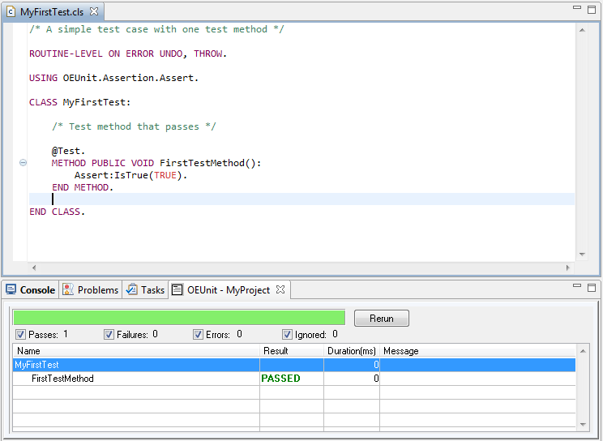

OEUnit - Unit Testing Framework |
OEUnit is a light-weight unit testing framework for OpenEdge ABL. OEUnit is intended to help write and run repeatable unit tests - similar to JUnit and other xUnit-based unit testing frameworks.

From the Github repository: https://github.com/CameronWills/OEUnit.
OEUnit 1.2 requires OpenEdge 10.2b or later (must be capable of running uncompiled source code).